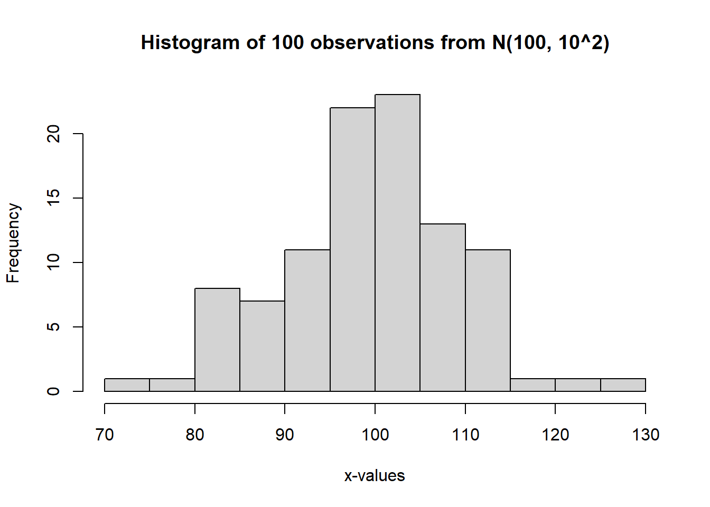
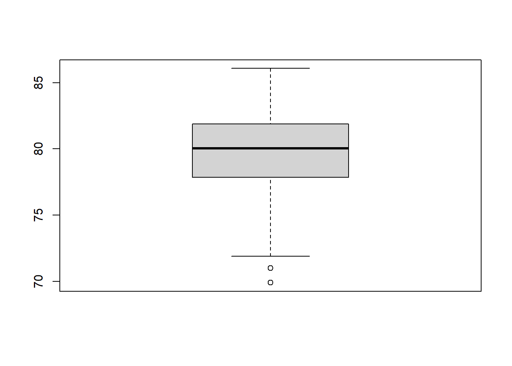
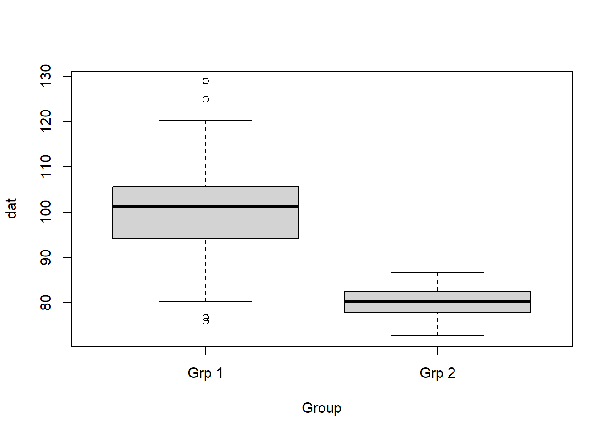
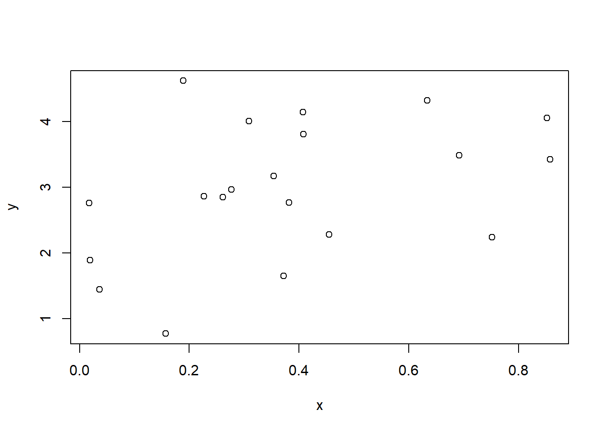
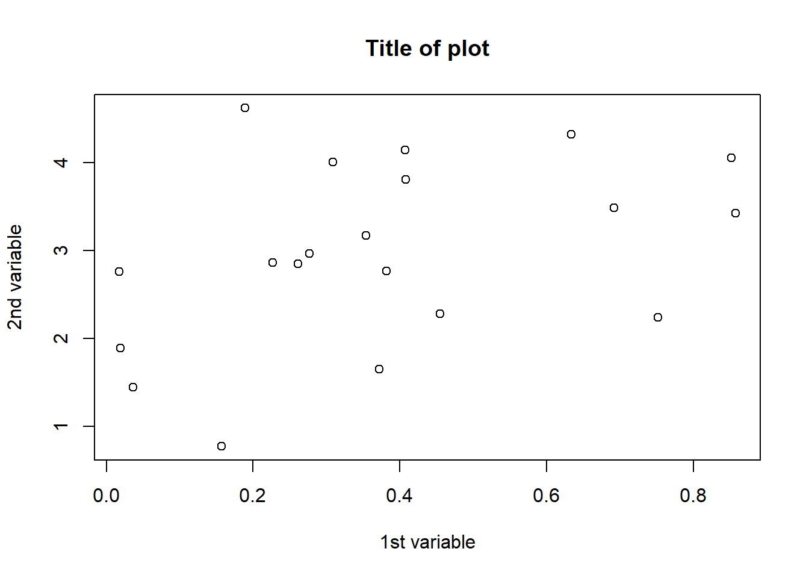
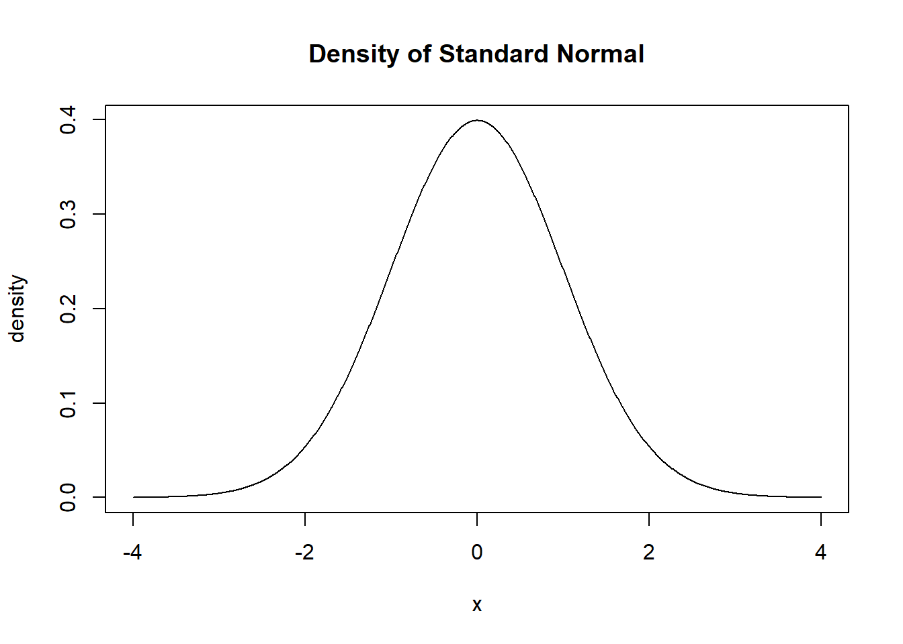
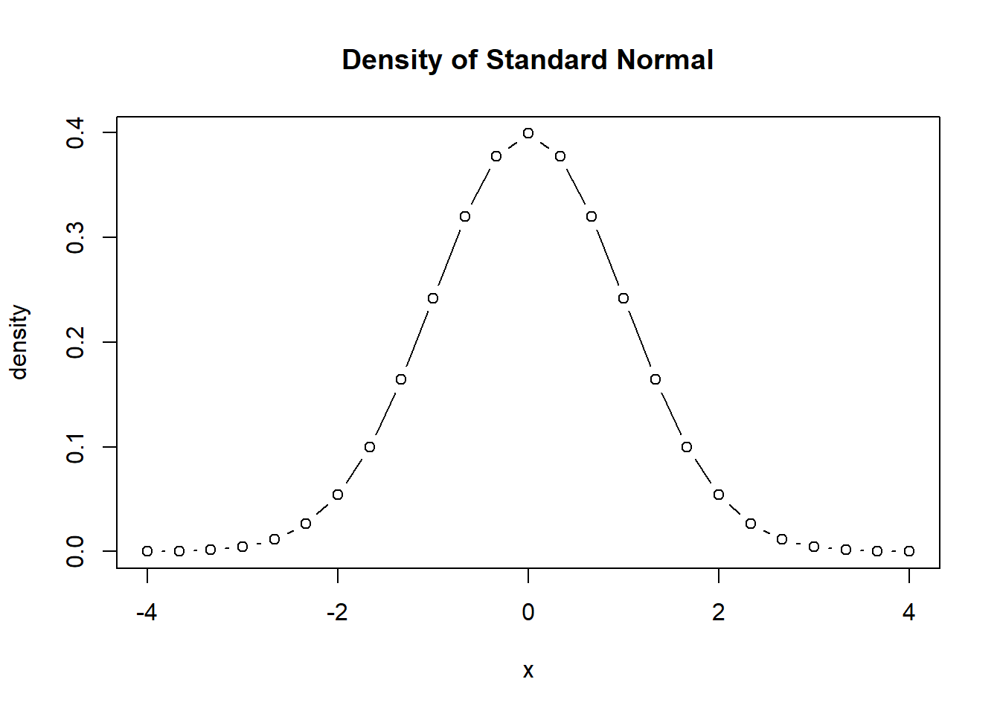
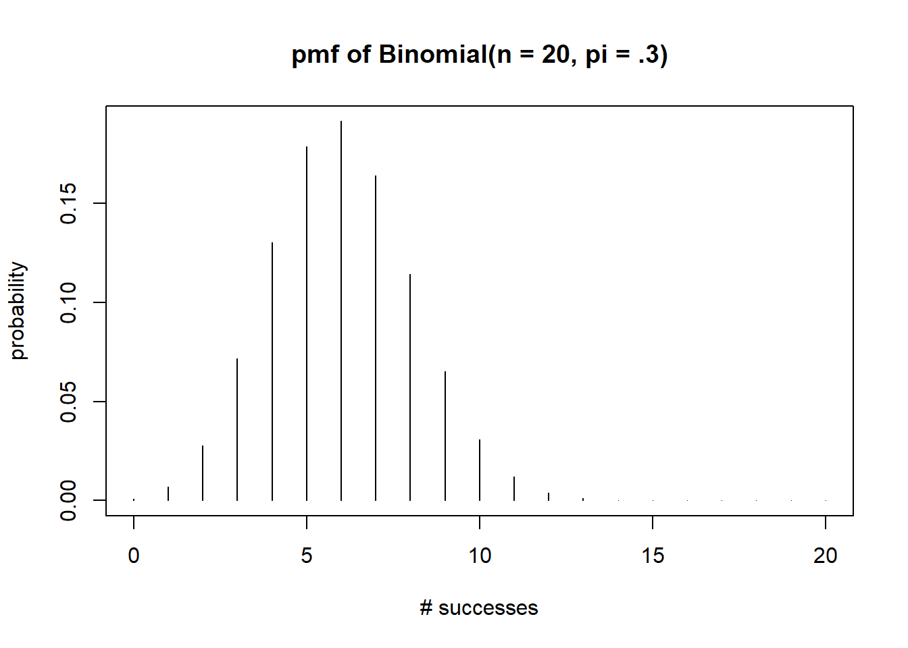

install.packages("tidyverse")Crash Course in R
This document will help you learn how to productively use R (R Core Team 2023).
An accompanying YouTube playlist that walks through this notebook is available by following the link here. I have also included direct, relevant video links throughout the file (e.g., immediately after the Introduction heading).
Note that there may be small differences between this document (which is easy to update) and the videos (which are not). When there is a discrepancy, trust this document more than the video.
Introduction (YouTube, Panopto)
What is R?
- R is a programming language and environment designed for statistical computing.
- It is modeled after the S programming language.
- It was introduced by Robert Gentleman and Robert Ihaka in 1993.
- R is free and open source software.
- R runs on Windows, Mac, Linux, and other types of computers.
- R is an interactive programming language
- You type and execute a command in the Console for immediate feedback in contrast to a compiled programming language, which compiles a program that is then executed.
- R is highly extendable.
- Many user-created packages are available to extend the functionality beyond what is installed by default.
- Users can write their own functions and easily add software libraries to R.
Obtaining R
R may be downloaded from the R Project for Statistical Computing (https://www.r-project.org/). You should be able to download R for your operating system at https://cloud.r-project.org/.
R Studio
R Studio Desktop is a free “front end” for R provided by (https://rstudio.com/). R Studio Desktop makes doing data science with R much easier by adding an Integrated Development Environment (IDE) and providing many other features. Currently, you may download R Studio at https://rstudio.com/products/rstudio/download/. If the link doesn’t work, you may need to navigate to the R Studio website directly to find the most current link.
Example
Install R and R Studio Desktop before continuing. Then open R Studio Desktop before your continue.
R Studio Layout
When opened, R Studio presents four panes:
- Source: the pane where you type your commands, which can be saved for later.
- Console: the pane where commands are executed.
- Environment/History: the pane where you can see all the objects in your workspace, your command history, and other things in other contexts.
- Files/Plot/Packages/Help: the pane where you navigate between directories, where plots can be viewed, where you can see the packages available to be loaded, and where you can get help.

Running commands
In programming, a command is a task you want the computer to perform.
Running or executing a command means asking the computer do the desired task.
- I will use run and execute synonymously in this document.
Commands are executed in R by typing them in the Console next to > and pressing enter.
Example
Type 1+1 in the R Console next to > and press enter. What do you get?
Creating a new script
If you need to successively execute multiple commands, it’s better to write your commands in a “script” file and then save the file. The commands in a script file are often generically referred to as “code”.
Script files make it easy to:
- Reproduce your data analysis without retyping all your commands.
- Share your code with others.
A new script file can be obtained by:
- Clicking File → New File → R Script in the R Studio menu bar.
- Pressing
Ctrl + Shift + non a PC orCmd + Shift + non a Mac.
Example
Open a new Script in R Studio.
Running code from a Script
There are various ways to run code from a script file. The most common ones are:
- Highlight the code you want to run and hit the Run button at the top of the Source pane.
- Highlight the code you want to run and press
Ctrl + Enteron your keyboard. If you don’t highlight anything, by default, R Studio runs the command of the line the cursor is on.
Example
- Type
mean(1:3)in your script file. - Run the command using the approaches mentioned above.
Saving a Script
To save a script file:
- Click File → Save in the R Studio menu bar.
- Press
Ctrl + son a PC orCmd + son a Mac.
Example
Save your script.
Packages
Packages are collections of functions, data, and other objects that extend the functionality installed by default in R.
R packages can be installed using the install.packages function. R packages can be attached to the current R session using the library function.
Example
The tidyverse (https://www.tidyverse.org, Wickham (2023b)) is an ecosystem of R packages that we will use extensively in this class. Currently, the tidyverse is comprised of the following packages:
- ggplot2: A package for plotting based on the “Grammar of Graphics” (Wickham, Chang, et al. 2023).
- purrr: A package for functional programming (Wickham and Henry 2023).
- tibble: A package providing a more advanced data frame (Müller and Wickham 2023).
- dplyr: A package for manipulating data. More specifically, it provides ” a grammar of data manipulation” (Wickham, François, et al. 2023).
- tidyr: A package to help create “tidy” data (Wickham, Vaughan, and Girlich 2023). Tidy data is a data organization style often convenient for data analysis.
- stringr: A package for working with character/string data (Wickham 2022).
- readr: A package for importing data (Wickham, Hester, and Bryan 2023).
- forcats: A package for working with categorical data (Wickham 2023a).
Install the set of tidyverse R packages by executing the following command:
After you install tidyverse, load the package(s) by executing the following command:
library(tidyverse)You should see something like this.
── Attaching core tidyverse packages ──────────────────────── tidyverse 2.0.0 ──
✔ dplyr 1.1.2 ✔ readr 2.1.4
✔ forcats 1.0.0 ✔ stringr 1.5.0
✔ ggplot2 3.4.2 ✔ tibble 3.2.1
✔ lubridate 1.9.2 ✔ tidyr 1.3.0
✔ purrr 1.0.1
── Conflicts ────────────────────────────────────────── tidyverse_conflicts() ──
✖ dplyr::filter() masks stats::filter()
✖ dplyr::lag() masks stats::lag()
ℹ Use the conflicted package (<http://conflicted.r-lib.org/>) to force all conflicts to become errorsGetting help (YouTube, Panopto)
There are a number of ways to get help in R.
- If you know the command for which you want help, then
?command(where command is replaced the name of the relevant command) will bring up the documentation for the object.- This approach will also work with data sets, package names, object classes, etc.
- If you need to find a command to help you with a certain topic, then
??topicwill search for the topic through all installed documentation and bring up any vignettes, code demonstrations, or help pages that include the topic for which you searched. - If you are trying to figure out why an error is being produced, what packages can be used to perform a certain analysis, how to perform a complex task that you can’t seem to figure out, etc., then simply do a web search for what you’re trying to figure out! Because R is such a popular language, it is likely you will find a stackoverflow response, a blog, an R users forum response, etc., that at least partially addresses your question.
Example
The lm command can be used to fit a linear model to a set of data. Use ?lm to get help about the lm function.
A logarithm is, “The exponent of the power to which a base number must be raised to equal a given number.” e.g., \(\log_{10}(100)=2\) since \(10^2=100\). What function is used to compute the natural logarithm (base \(e\approx 2.718281828459\)) in R? Use ??logarithm to find the R functions that may provide this functionality.
Suppose you want to change the x-axis label of a plot in R. Do a web search to see if you can figure out how to do this.
Data types and structures (YouTube, Panopto)
Basic data types
R has 6 basic (“atomic”) vector types:
- character: collections of characters. E.g.,
"a", “hello world!” - double: decimal numbers. e.g.,
1.2,1.0. - integer: whole numbers. In R, you must add
Lto the end of a number to specify it as an integer. E.g.,1Lis an integer but1is a double. - logical: boolean values,
TRUEandFALSE. - complex: complex numbers. E.g.,
1+3i. - raw: a type to hold raw bytes.
Both double and integer values are specific types of numeric values.
The typeof function returns the R internal type or storage mode of any object. We do this for several objects below.
typeof(1)[1] "double"typeof(1L)[1] "integer"typeof("hello world!")[1] "character"Other important object types
There are other important types of objects in R that are not basic. We will discuss a few. The R Project manual provides additional information about available types.
Numeric
An object is numeric if it is of type integer or double. In that case, it’s mode is said to be numeric.
The is.numeric function tests whether an object can be interpreted as numbers. We can use it to determine whether an object is numeric. Alternatively, we can use the mode function to get the type or storage mode of an object.
Some examples:
# is "hello world!" numeric?
is.numeric("hello world!")[1] FALSE# is 1 numeric?
is.numeric(1)[1] TRUE# what is the mode of 1
mode(1)[1] "numeric"# is 1L numeric?
is.numeric(1L)[1] TRUE# What is the mode of 1L?
mode(1)[1] "numeric"NULL
NULL is a special object to indicate the object is absent. An object having a length of zero is not the same thing as an object being absent.
NA
A “missing value” occurs when the value of something isn’t known. R uses the special object NA to represent missing value.
If you have a missing value, you should represent that value as NA.
- Do not make the mistake of using
-99or0or" "to indicate a missing value. This can easily lead to serious data analysis problems. "NA"is not the same thing asNA.
Technically, an NA value is a logical constant of length 1 that contains a missing value indicator. In practice, R knows that an NA value can represent a character integer, double, or complex value depending on the context. R will automatically convert NA to NA_character_, NA_integer_, NA_real_, and NA_complex_ as needed to represent missing values for character, integer, double, and complex values, respectively. There is no NA for the raw type. See below.
typeof(NA)[1] "logical"typeof(NA_character_)[1] "character"typeof(NA_integer_)[1] "integer"typeof(NA_real_)[1] "double"typeof(NA_complex_)[1] "complex"Functions
A function is an object that performs a certain action or set of actions based on objects it receives from its arguments.
- A function has type
closureand modefunction.
The mean function computes the sample mean of a relevant object. Consider the type and mode of the mean function.
typeof(mean)[1] "closure"mode(mean)[1] "function"Data structures
R operates on data structures. A data structure is simply some sort of “container” that holds certain kinds of information
R has 5 basic data structures:
- vector.
- matrix.
- array.
- data frame.
- list.
Vectors, matrices, and arrays are homogeneous objects that can only store a single data type at a time. Data frames and lists can store multiple data types.
Vectors and lists are considered one-dimensional objects. A list is technically a vector. Vectors of a single type are atomic vectors (https://cran.r-project.org/doc/manuals/r-release/R-lang.html#List-objects).
Matrices and data frames are considered two-dimensional objects. Arrays can have 1 or more dimensions.
The relationship between dimensionality and data type for the basic data structures is summarized in Table 1, which is based on a table in the first edition of Hadley Wickham’s Advanced R (https://adv-r.had.co.nz/Data-structures.html#data-structure).
| # of dimensions | data type | |
|---|---|---|
| homogeneous | heterogeneous | |
| 1 | atomic vector | list |
| 2 | matrix | data frame |
| 1 or more | array | |
Vectors (YouTube, Panopto)
A vector is a single-dimensional set of data of the same type.
Creation
The most basic way to create a vector is the c (combine) function. The c function combines values into an atomic vector or list.
The following commands create vectors of type numeric, character, and logical, respectively.
c(1, 2, 5.3, 6, -2, 4)c("one", "two", "three")c(TRUE, TRUE, FALSE, TRUE)
Example
Execute the three commands below in the Console to see what you get.
c(1, 2, 5.3, 6, -2, 4)c("one", "two", "three")c(TRUE, TRUE, FALSE, TRUE)Creating patterned vectors
R provides several functions for creating vectors following certain consistent patterns.
The seq (sequence) function is used to create an equidistant series of numeric values. Some examples:
seq(1, 10)creates a sequence of numbers from 1 to 10 in increments of 1.1:10creates a sequence of numbers from 1 to 10 in increments of 1.seq(1, 20, by = 2)creates a sequence of numbers from 1 to 20 in increments of 2.seq(10, 20, len = 100)creates a sequence of numbers from 10 to 20 of length 100.
The rep (replicate) function can be used to create a vector by replicating values. Some examples:
rep(1:3, times = 3)replicates the sequence1, 2, 3three times in a row.rep(c("trt1", "trt2", "trt3"), times = 1:3)replicates"trt1"once,"trt2"twice, and"trt3"three times.rep(1:3, each = 3)replicates each element of the sequence 1, 2, 3 three times.
Example
Execute the following commands in the Console to see what you get.
seq(1, 10)1:10seq(1, 20, by = 2)seq(10, 20, len = 100)rep(1:3, times = 3)rep(c("trt1", "trt2", "trt3"), times = 1:3)rep(1:3, each = 3)Assignment (YouTube, Panopto)
To store a data structure in the computer’s memory we must assign it a name.
Data structures can be stored (technically, assigned a name) using the assignment operator <- or =.
Some comments:
- In general, both
<-and=can be used for assignment. - Pressing
Alt + -on a PC orOption + -on a Mac will insert<-into the R Console and Script files.- If you are creating an R Markdown file, then this shortcut will only insert
<-if you are in an R code block.
- If you are creating an R Markdown file, then this shortcut will only insert
<-and=are NOT synonyms, but can be used identically most of the time. It’s safest to use<-for assignment.- In Section 8.2.26 of R Inferno, Patrick Burns states, “Standard advice is to avoid using
=when you mean<-even though it takes an extra keystroke. However, it is largely a matter of taste (as long as you know the differences).” - If you want to have your mind blown on the topic, you may read
?assignOpsor the stackoverflow thread here.
As your instructor who cares about you, I recommend using the <- operator for assignment. However, like a bad parent who doesn’t practice what they preach, I will often use the = operator because I’m lazy and learned to program in C++, which like nearly all languages, uses = for assignment.
You typically won’t have issues with either assignment operator. But when you do, you’ll be very upset.
Here’s an example of when you can have issues.
This code works:
system.time(result <- rnorm(100)) user system elapsed
0 0 0 The code above times (using system.time) how long it takes to draw 100 values from a standard normal distribution (rnorm(100)) and assign it the name result.
This code doesn’t work:
system.time(result = rnorm(100))Error in system.time(result = rnorm(100)): unused argument (result = rnorm(100))What’s the difference? In the second case, R thinks you are setting the result argument of the system.time function (which doesn’t exist) to the value produced by rnorm(100).
A trivial examples of assignment: v1 <- 1:5 assigns the sequence 1 through 5 the name v1.
To access the data assigned a name, we simply type the name into the Console and hit enter.
v1 <- 1:5
v1[1] 1 2 3 4 5Vectors can be combined and stored in an object using the c function and the assignment operator.
We’ll create a new vector, v2, combine it with v1 using the c function, then assign it the name new.
v2 <- c(1, 10, 11)
new <- c(v1, v2)
new[1] 1 2 3 4 5 1 10 11Categorical vectors (YouTube, Panopto)
Categorical data should be stored as a factor in R.
Hadley Wickham states in Advanced R:
A factor is a vector that can contain only predefined values. It is used to store categorical data. Factors are built on top of an integer vector with two attributes: a
class, “factor”, which makes it behave differently from regular integer vectors, andlevels, which defines the set of allowed values.
For the most part, you don’t need to worry about the technical details of how a factor is represented. But you should remember that your categorical data should be represented as a factor.
The factor function takes values that can be coerced to a character and converts them to an object of class factor.
Consider the examples below:
f1 <- factor(rep(1:6, times = 3))
f1 [1] 1 2 3 4 5 6 1 2 3 4 5 6 1 2 3 4 5 6
Levels: 1 2 3 4 5 6f2 <- factor(c("a", 7, "blue", "blue", FALSE))
f2[1] a 7 blue blue FALSE
Levels: 7 a blue FALSEExample
Create a vector named grp that has two levels: a and b, where the first 7 values are a and the second 4 values are b.
Extracting parts of a vector
Subsets of the elements of a vector can be extracted by appending an index vector in square brackets [] to the name of the vector .
Let’s create the numeric vector 2, 4, 6, 8, 10, 12, 14, 16.
# define a sequence 2, 4, ..., 16
a <- seq(2, 16, by = 2)
a[1] 2 4 6 8 10 12 14 16Let’s access the 2nd, 4th, and 6th elements of a.
# extract subset of vector
a[c(2, 4, 6)][1] 4 8 12Let’s access all elements in a EXCEPT the 2nd, 4th, and 6th using the minus (-) sign in front of the index vector.
# extract subset of vector using minus
a[-c(2, 4, 6)][1] 2 6 10 14 16Let’s access all elements in a except elements 3 through 6.
a[-(3:6)][1] 2 4 14 16Helpful functions (YouTube, Panopto)
General functions
Below is a list of functions commonly used to describe data objects (x) and what they do:
length(x): return the number of elements inxsum(x): sum the elements inxmean(x): compute the sample mean of the elements inxvar(x): compute the sample variance of elements inxsd(x): compute the sample standard deviation of the elements inxrange(x): determine the range (minimum and maximum) of the elements inxlog(x): compute the (natural) logarithm of the elements inxsummary(x): provide a summary ofx. The output changes depending on the class (advanced data type) ofx.str(x): provide information about the structure ofx. Usually, the class of the object and some information about its size.
Example
Run the following commands in the Console:
x <- rexp(100) # sample 100 iid values from an Exponential(1) distributionlength(x) # length of xsum(x) # sum of xmean(x) # sample mean of xvar(x) # sample variance of xsd(x) # sample standard deviation of xrange(x) # range of xlog(x) # logarithm of xsummary(x) # summary of xstr(x) # structure of xPlotting with base R (YouTube, Panopto)
The plotting capabilities of R are one of its most powerful and attractive features.
It is relatively simple to construct histograms, (parallel) boxplots, scatter plots, etc.
Some examples:
- A histogram is created using the
histfunction. - A boxplot is created using the
boxplotfunction. - A scatter plot is created using the
plotfunction.
Histograms
A histogram with a custom x-axis label and title can be created using the commands below. The x-axis label is customized using the xlab argument and the title is customized using the main argument.
x <- rnorm(100, mean = 100, sd = 10) # generate some data
hist(x, xlab = "x-values", main = "Histogram of 100 observations from N(100, 10^2)")
Boxplots
A single boxplot can be created using the following commands:
y <- rnorm(100, mean = 80, sd = 3) # generate some data
boxplot(y)
A set of parallel boxplots can be created by distinguishing numeric values by a factor variable.
#make groups for x and y
grp <- factor(rep(c("Grp 1", "Grp 2"), each = 100))
# combine x and y into a single vector
dat <- c(x, y)
boxplot(dat ~ grp, xlab = "Group")
Scatter plots
A scatter plot of two numeric vectors x and y can be created using the notation plot(x, y) (with x on the x-axis and y on the y-axis) or plot(y ~ x) (with x on the x-axis and y on the y-axis).
We create some data with a linear relationship below.
x <- runif(20)
y <- 2 + 3 * x + rnorm(20)We create a scatter plot using the first syntax.
plot(x, y)
We create the same scatter plot using the preferred syntax.
plot(y ~ x)We can customize the x-axis and y-axis labels using xlab and ylab, respectively. A title can be added after the fact using the title function.
plot(x, y, xlab="1st variable", ylab="2nd variable")
title("Title of plot")
The points of a scatter plot will be connected with a line (in the order the points are provided) by specifying type = "l". Specifying type = "b" will display both the points and the line.
x <- seq(-4, 4, len = 1000)
y <- dnorm(x, mean = 0, sd = 1)
plot(x, y, xlab = "x", ylab = "density", type = "l")
title("Density of Standard Normal")
x2 <- seq(-4, 4, len = 25)
y2 <- dnorm(x2, mean = 0, sd = 1)
plot(y2 ~ x2, xlab = "x", ylab = "density", type = "b")
title("Density of Standard Normal")
To create histogram-like vertical lines, you can specify type = "h". This is useful for plotting the probability mass function of a random variable. Consider the following example for a Binomial distribution with \(n=20\) trials and probability of success \(\pi = 0.3\).
x <- 0:20
y <- dbinom(x, size = 20, prob = .3)
plot(x, y, xlab = "# successes", ylab = "probability", type = "h")
title("pmf of Binomial(n = 20, pi = .3)")
Example
- Use
?Distributionsto see the standard distributions included in R. - Draw 1000 observations from a Poisson distribution with a mean of 10 and assign it the name
v. - Use the
tablefunction to tabulate (as a continguency table) the values ofvand store the tabulated values in an object calledtabv.tabvis a contingency table. The top row is an observed value invand the bottow row is the number of observations with the value.
- Use the
strfunction to learn more about the structure oftabv. - Use the
plotfunction ontabv. What do you get?plotis actually a generic function. Many types of objects have a plot method associated with them. If you useploton the object, then R produces the default plot for the object.
- Use the
namesfunction to grab the names of the observed values inv. Assign this the namevalue_char. - Use the
strfunction onvalue_charto confirm that this is a character vector. - Convert the
value_charcharacter vector to a numeric vector using theas.numericfunction. Assign this the namevalue. - Convert
tabvto a vector using theas.vectorfunction and assign it the namecounts. - Examine the structure of
counts. - Construct a histogram of counts.
- Construct a boxplot of counts.
- Construct a histogram-like plot of counts using the
valuesvariable on the x-axis and thecountsvariable on the y-axis.
Data Frames (YouTube, Panopto)
Data frames are two-dimensional data objects. Each column of a data frame is a vector (or variable) of possibly different data types. This is a fundamental data structure used by most of R’s modeling functions.
In general, I recommend tidy data, which means that each variable forms a column of the data frame, and each observation forms a row.
Creation
Data frames are created by passing vectors into the data.frame function.
The names of the columns in the data frame are the names of the vectors you give the data.frame function.
Consider the following simple example.
# create vectors d, e, f of numeric, character, and logical values
d <- c(1, 2, 3, 4)
e <- c("red", "white", "blue", NA)
f <- c(TRUE, TRUE, TRUE, FALSE)
# create data frame using d, e, and f
df <- data.frame(d, e, f)
df d e f
1 1 red TRUE
2 2 white TRUE
3 3 blue TRUE
4 4 <NA> FALSEThe columns of a data frame can be renamed using the names function on the data frame.
names(df) <- c("ID", "Color", "Passed")
df ID Color Passed
1 1 red TRUE
2 2 white TRUE
3 3 blue TRUE
4 4 <NA> FALSEThe columns of a data frame can be named when you are first creating the data frame by using name = for each vector of data.
df2 <- data.frame(ID = d, Color = e, Passed = f)
df2 ID Color Passed
1 1 red TRUE
2 2 white TRUE
3 3 blue TRUE
4 4 <NA> FALSEExtracting parts of a data frame
There are many ways to access or extract specific parts of a data frame.
Selecting columns of a data frame
There are several approaches for selecting specific columns of a data frame. There can be important and subtle differences between these approaches that we describe below.
df$Colorselects theColorvector fromdfand returns the vector itself (the object is no longer a data frame).df["Color"]selects theColorcolumn ofdf(the object is still a data frame but only has theColorcolumn).df[1]selects the first column ofdf.df[c("Color", "ID")]selects both theColorandIDcolumns ofdfdf[c(1, 3)]selects the first and third columns ofdf.
Note the difference in the results when using $ versus [] to select part of the data.
df$Color # extract Color as a vector[1] "red" "white" "blue" NA is.vector(df$Color) # confirm it is a vector[1] TRUEdf["Color"] # extract Color but keep it in data frame form Color
1 red
2 white
3 blue
4 <NA>is.data.frame(df["Color"]) # confirm it is a data frame[1] TRUEBasically, df$Color pulls the Color vector out of the df without preserving the data frame structure. df["Color"] accesses the same information but preserves the data frame structure.
Extracting row and columns of a data frame
Rows or columns of a data frame can also be extracted by thinking of the data frame as a general matrix and specifying the desired rows or columns in square brackets after the data frame’s name.
df[1,]extracts the first row ofdf.df[1:2,]extracts the first two rows ofdf.df[,2]extracts the second column ofdf.df[1:2, 2:3]extracts the data in rows 1 and 2 of columns 2 and 3 ofdf.df[c(1, 3), c("Color", "Passed")]extracts rows 1 and 3 of theColorandPassedcolumns ofdf.
From the examples in the list above, you can discern that the vector of values before the , indicates the rows to be extracted while the vector of values after the , indicate the columns to be extracted.
- If nothing is provided before the
,then all the rows of the data frame are extracted. - If nothing is provided after the
,then all the columns of the data frame are extracted.
Example
Run the following commands in the Console. Study each command and what is returned when each command is run to better understand how to extract parts of a data frame.
# Create a data frame
df3 <- data.frame(numbers = 1:5,
characters = letters[1:5],
logicals = c(TRUE, TRUE, FALSE, TRUE, FALSE))df3 # print dfdf3$logicals # extract the logicals vector of df3df3["logicals"] # subsetdf3[1, ] # extract the first column of df3df3[, 3] # extract the third column of df3df3[, 2:3] # extract the column 2 and 3 of df3df3[, c("numbers", "logicals")] # access the numbers and logical columns of df3df3[c("numbers", "logicals")]It is often convenient to work with vectors instead of data frames, so it is sometimes desirable to extract a vector from a data frame and assign it a new name for later use.
- To access the
IDcolumn ofdf2and assign it the namenewID, we could runnewID <- df2$ID.
Importing Data (YouTube, Panopto)
The read.table function imports data from file into R as a data frame.
Usage: read.table(file, header = TRUE, sep = ",")
fileis the file path and name of the file you want to import into R.- If you don’t know the file path, set
file = file.choose()will bring up a dialog box asking you to locate the file you want to import.
- If you don’t know the file path, set
headerspecifies whether the data file has a header (variable labels for each column of data in the first row of the data file).- If you don’t specify this option in R or use
header = FALSE, then R will assume the file doesn’t have any headings. header = TRUEtells R to read in the data as a data frame with column names taken from the first row of the data file.
- If you don’t specify this option in R or use
sepspecifies the delimiter separating elements in the file.- If each column of data in the file is separated by a space, then use
sep = " " - If each column of data in the file is separated by a comma, then use
sep = "," - If each column of data in the file is separated by a tab, then use
sep = "\t".
- If each column of data in the file is separated by a space, then use
Here is an example reading a csv (comma separated file) with a header:
dtf <- read.table(file = "https://raw.githubusercontent.com/jfrench/DataWrangleViz/master/data/covid_dec4.csv",
header = TRUE,
sep = ",")
str(dtf)'data.frame': 50 obs. of 7 variables:
$ state_name: chr "Alabama" "Alaska" "Arizona" "Arkansas" ...
$ state_abb : chr "AL" "AK" "AZ" "AR" ...
$ deaths : int 3831 142 6885 2586 19582 2724 5146 782 19236 9725 ...
$ population: num 387000 96500 498000 238000 2815000 ...
$ income : int 25734 35455 29348 25359 31086 35053 37299 32928 27107 28838 ...
$ hs : num 82.1 91 85.6 82.9 80.7 89.7 88.6 87.7 85.5 84.3 ...
$ bs : num 21.9 27.9 25.9 19.5 30.1 36.4 35.5 27.8 25.8 27.3 ...Accessing elements of a data structure with logical statements (YouTube, Panopto)
Sometimes we need to know if the elements of an object satisfy certain conditions. This can be determined using the logical operators <, <=, >, >=, ==, !=.
Note that == means equal to and != means not equal to.
Example
Recall that we created a vector in R with the elements 2, 4, 6, …, 16.
a <- seq(2, 16, by = 2)Execute the following commands in R and see what you get. What is each statement performing?
a > 10a <= 4`a == 10a != 10And and Or statements
More complicated logical statements can be made using & and |.
&means “and”|means “or”
Example
Execute the following commands in R and see what you get. What is each statement performing?
(a > 6) & (a <= 10)(a <= 4)|(a >= 12)Logical statements and subsetting
Logical statements can be used to return parts of an object satisfying the appropriate criteria. Specifically, we pass logical statements within the square brackets used to access part of a data structure.
Consider the results from running the following commands.
a[a < 6][1] 2 4a[a == 10][1] 10a[(a < 6) | (a == 10)][1] 2 4 10Functions (YouTube, Panopto)
A function is essentially a sequence of commands executed based on certain arguments supplied to the function.
In R, a function is defined using the general format:
myfunction <- function(arg1, arg2, arg3) {
code to execute
}The name of the function is myfunction.
To use this function, I type the name of the function and supply the 3 arguments in parentheses in the Console, e.g., myfunction(x1, x2, x3).
A function may or may not return something that you can store for later use.
Let’s create a function that returns the sample standard deviation of a vector x. Recall that \[SD(x) = \sqrt{\frac{1}{n-1}\sum_{i=1}^n (x_i - \bar{x})^2}.\] The sole argument is x, a vector of numeric values.
stdev <- function(x) {
s <- sqrt(sum((x - mean(x))^2)/(length(x) - 1))
s
}Some comments:
- The curly braces
{and}indicate the beginning and end of the code that the function will run. - The line
s <- sqrt(sum((x - mean(x))^2)/(length(x) - 1))computes the sample standard deviation ofxand then assigns the computed value the names. - The line
sreturns the object stored ins. When an object is printed at the end of a function, it tells the function to return that object.
Let’s test our function against the sd function built into R.
Let’s generate some data:
z <- rnorm(20)Let’s compute the sample standard deviation of z using the sd function and the stdev function.
sd(z)[1] 1.044628stdev(z)[1] 1.044628Example
Create a function that returns the density of a normal random variable with mean mu and standard deviation sigma for a vector x. Recall that the density function of a normal random variable is \[f(x) = \frac{1}{\sigma \sqrt{2 \pi}} \exp\left(-\frac{1}{2 \sigma^2} (x - \mu)^2\right).\]
The arguments should be:
x: the vector of values at which I want to determine the density.mu, the mean of the normal distribution.sigma, the standard deviation of the normal distribution.
Function returning a list of results
Let’s do a simple example of a function that returns two pieces of information using a list. We haven’t really talked about lists yet, but we’ll learn more about them later.
Example: Create a function that returns the mean and standard deviation of a vector x.
The sole argument will be, x, a vector of numeric values.
ms <- function(x) {
m <- mean(x) # compute the sample mean of `x`
s <- sd(x) # compute the sample sd of `x`
# return a list with elements `m` and `s`
return(list(m = m, s = s))
}
ms(z)$m
[1] 0.3641666
$s
[1] 1.044628ms_z <- ms(z)ms_z$m[1] 0.3641666ms_z[[1]][1] 0.3641666ms_z$s[1] 1.044628ms_z[[2]][1] 1.044628References
Müller, Kirill, and Hadley Wickham. 2023. Tibble: Simple Data Frames. https://CRAN.R-project.org/package=tibble.
R Core Team. 2023. R: A Language and Environment for Statistical Computing. Vienna, Austria: R Foundation for Statistical Computing. https://www.R-project.org/.
Wickham, Hadley. 2022. Stringr: Simple, Consistent Wrappers for Common String Operations. https://CRAN.R-project.org/package=stringr.
———. 2023a. Forcats: Tools for Working with Categorical Variables (Factors). https://CRAN.R-project.org/package=forcats.
———. 2023b. Tidyverse: Easily Install and Load the Tidyverse. https://CRAN.R-project.org/package=tidyverse.
Wickham, Hadley, Winston Chang, Lionel Henry, Thomas Lin Pedersen, Kohske Takahashi, Claus Wilke, Kara Woo, Hiroaki Yutani, and Dewey Dunnington. 2023. Ggplot2: Create Elegant Data Visualisations Using the Grammar of Graphics. https://CRAN.R-project.org/package=ggplot2.
Wickham, Hadley, Romain François, Lionel Henry, Kirill Müller, and Davis Vaughan. 2023. Dplyr: A Grammar of Data Manipulation. https://CRAN.R-project.org/package=dplyr.
Wickham, Hadley, and Lionel Henry. 2023. Purrr: Functional Programming Tools. https://CRAN.R-project.org/package=purrr.
Wickham, Hadley, Jim Hester, and Jennifer Bryan. 2023. Readr: Read Rectangular Text Data. https://CRAN.R-project.org/package=readr.
Wickham, Hadley, Davis Vaughan, and Maximilian Girlich. 2023. Tidyr: Tidy Messy Data. https://CRAN.R-project.org/package=tidyr.
Comments
A comment is a set of text ignored by R when run in the Console.
Comments are generally used as documentation within the code itself to remind yourself and others what the code is supposed to do, why the code is implemented a certain way, etc.
A comment is indicated by the
#symbol. Nothing to the right of the#is executed in the Console.To comment (or uncomment) multiple lines in R, highlight the code you want to comment and press
Ctrl + Shift + con a PC orCmd + Shift + con a Mac.Consider the examples below. In the line below, R adds
1 + 1but ignores everything after the#.The next line is not executed because all commands are to the right of
#.